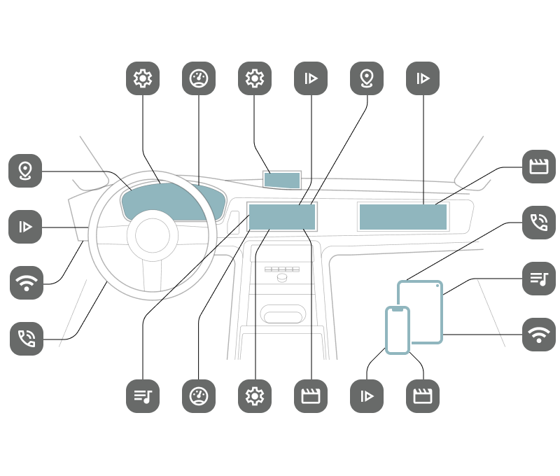
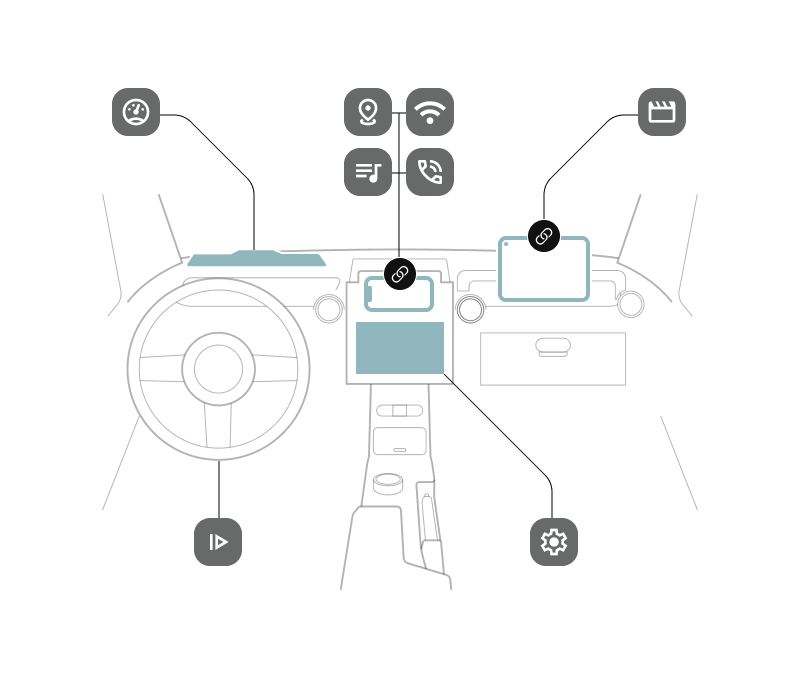
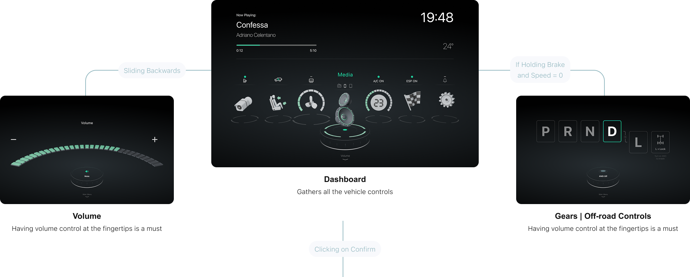
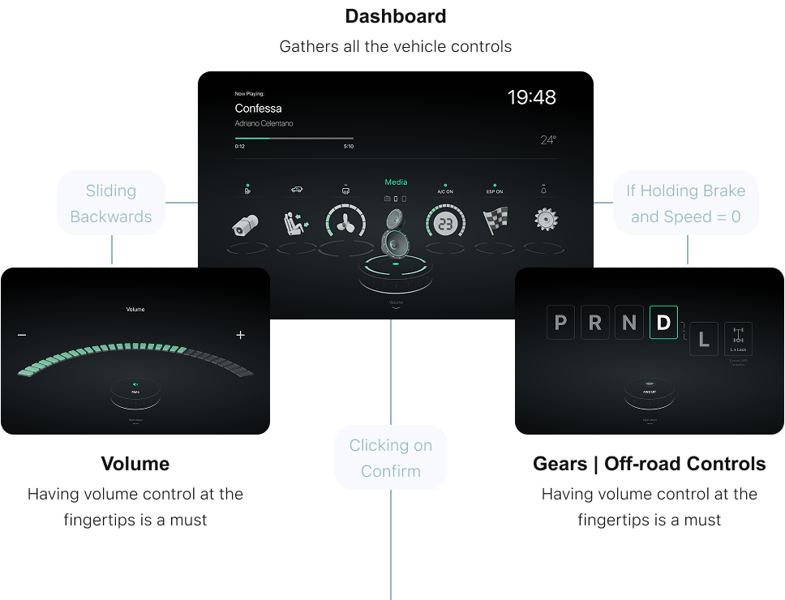
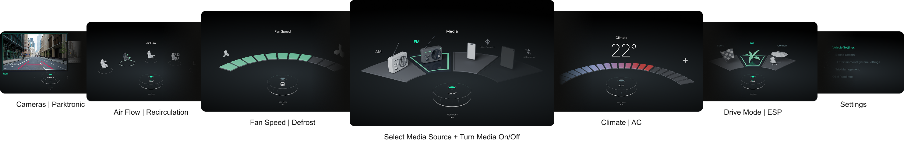
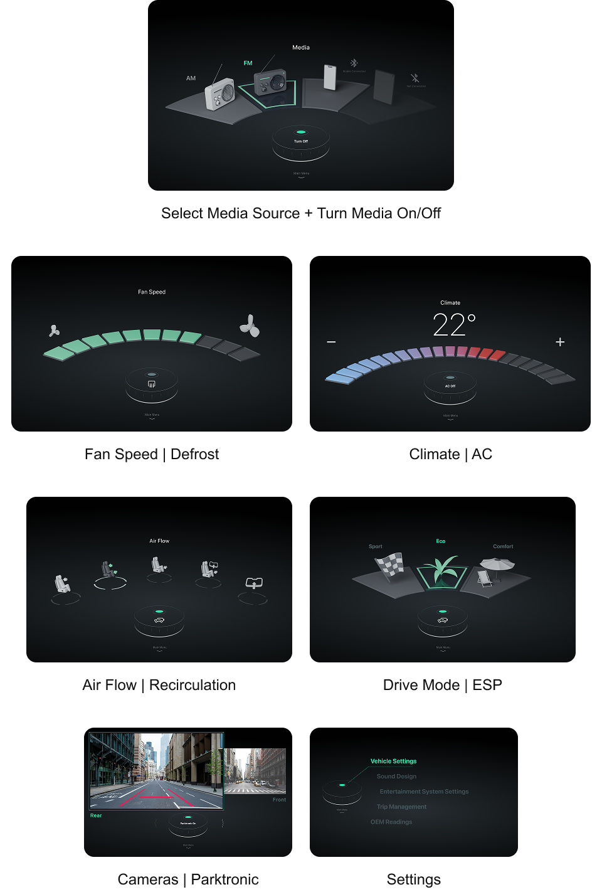
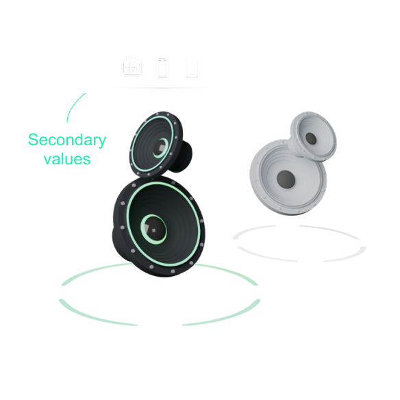
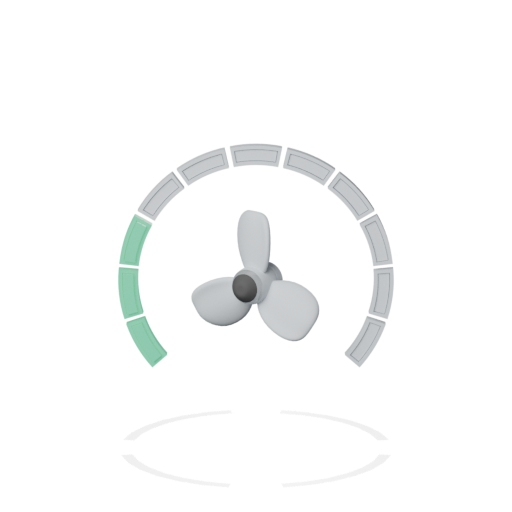
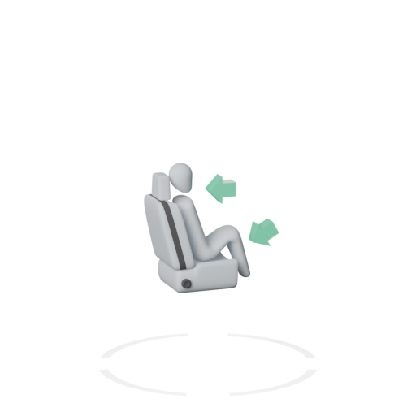
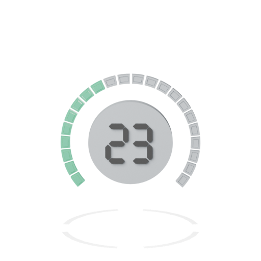

Seamless control of music, climate, drive, and beyond
Covering all the essentials
DriveCore is designed to rethink how in-car media systems work in modern vehicles. Its core goal is to bring essential functionality to budget SUVs — without compromising on usability. With intuitive two-level navigation, DriveCore unifies vehicle and entertainment controls while eliminating unnecessary duplication.
Optimizing Display Real-Estate
DriveCore is designed to optimize system by integrating seamlessly with the driver's smartphone, delegating media, navigation, and communication tasks to platforms best suited for them. The onboard interface is dedicated to essential vehicle controls and is operated via a physical knob, ensuring intuitive use and minimal distraction during driving.
Current Trends:
Modern interiors are already far beyond the Marginal utility threshold, adding more and more complexity with no notable UX enhancements

DriveCore UI:
DriveCore UI utilises the external equipment pieces and rationalizes the vehicle screens area to reduce the costs and simplify the UX

Drive Data
Navigation
Playlists
Internet Connection
Calls
Media
Settings
Music Controls
2-Layer Navigation Architecture
Hoomac’s User Interface is supposed to combine the best fully digital vehicle interfaces with a century proofed physical controls with only few natural gestures.
1st Layer
Here user can circle between main menu, volume and a gear selector with a TwistMotion backwards button

2nd Layer
Here user can tune all the vehicle controls circling the TwistMotion and turn a secondary control on/off

2-in-1 Menu Indicators
Main Menu icons serve both: a menu trigger and a current state indicator for the main value. Secondary values are depicted in the icons above


Fan Speed
Shows the defined speed directly in the icon also inheriting the-all-time design
Drive Mode
Let’s user enter the drive settings while showing the selected mode depicted in the icon

Air Flow
Menu item shows also the time-proven icons for the selected air direction

Climate
This menu icon looks just like a temperature knob combined with the number of selected degrees
2.5D Design Language
DriveCore follows simple color scheme depicted in the 2.5D design system to match vehicle’s interior materials and lights .